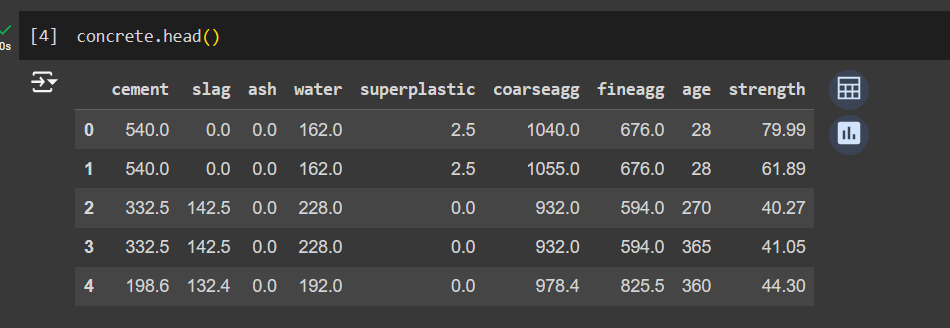
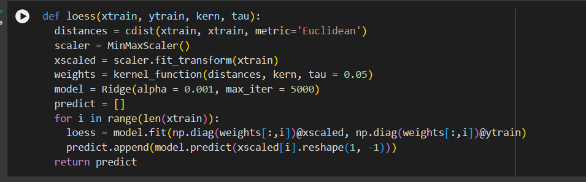
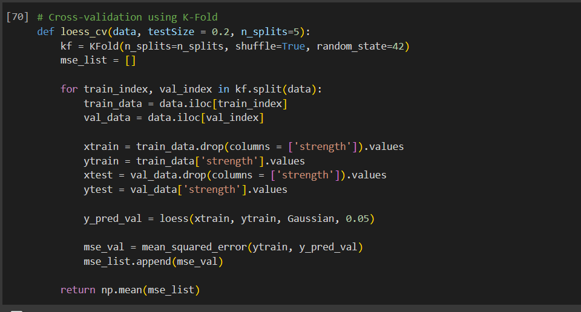
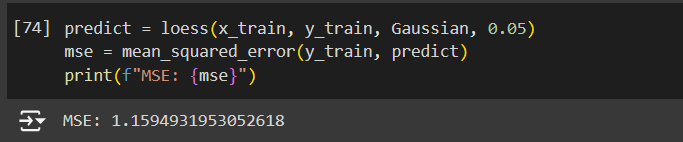
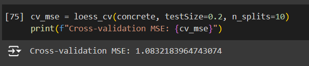

Daniel Han

I am using the concrete.csv dataset to illustrate the LOWESS algorithm. This dataset contains attributes of concrete such as its age and physical makeup, and how these attributes affect the strength of the concrete.
Here are some pictures of my code.


The code works for both train test splits and KFold cross validations.
Here are the results of my code.

The train test split yielded an MSE of 1.1594.

The 10-Fold cross validation yielded an MSE of 1.0832.
Presented below is code of gradient boosting on a locally weighted regression algorithm. This code is then applied onto the dataset "concrete" which contains various feature variables detailing the attributes of concrete. These feature variables are then used to train and predict the y value "strength".
def loess(xtrain, ytrain, kern, tau, scalerType, alpha):
distances = cdist(xtrain, xtrain, metric='Euclidean')
scaler = scalerType
xscaled = scaler.fit_transform(xtrain)
weights = kernel_function(distances, kern, tau=0.05)
model = Ridge(alpha=alpha, max_iter=5000)
models = []
predictions = []
for i in range(len(xtrain)):
loess = model.fit(np.diag(weights[:, i]) @ xscaled, np.diag(weights[:, i]) @ ytrain)
predictions[i] = models[i].predict(X[i].reshape(1, -1))
models.append(loess)
return models, weights, scaler, predictions
Here is the code for the loess model created in homework 1. In this method, it scales the data and computes the distances to fit the loess model.
class LOESS:
def __init__(self, kern='tricube', tau=0.05, alpha=0.01, scalerType=StandardScaler()):
self.kern = kern
self.tau = tau
self.alpha = alpha
self.scalerType = scalerType
self.is_fitted_ = False # To track if the model has been fitted
self.models = []
self.scaler = None
def fit(self, X, y, boosting_steps=10):
self.scaler = self.scalerType
X_scaled = self.scaler.fit_transform(X)
residuals = y.copy()
for step in range(boosting_steps):
distances = cdist(X_scaled, X_scaled, metric='euclidean')
weights = kernel_function(distances, self.kern, tau=self.tau)
model = Ridge(alpha=self.alpha, max_iter=5000)
predictions = np.zeros(len(X_scaled))
for i in range(len(X_scaled)):
loess_model = model.fit(np.diag(weights[:, i]) @ X_scaled, np.diag(weights[:, i]) @ residuals)
predictions[i] = loess_model.predict(X_scaled[i].reshape(1, -1))
residuals -= predictions
self.models.append(model)
self.is_fitted_ = True
def predict(self, X):
X_scaled = self.scaler.transform(X)
final_predictions = np.zeros(len(X_scaled))
for model in self.models:
step_predictions = np.zeros(len(X_scaled))
for i in range(len(X_scaled)):
step_predictions[i] = model.predict(X_scaled[i].reshape(1, -1))
final_predictions += step_predictions
return final_predictions / len(self.models)
def is_fitted(self):
return self.is_fitted_
def cross_validate(self, X, y, n_splits=10):
kf = KFold(n_splits=n_splits, shuffle=True, random_state=42)
mse_scores = []
for train_index, val_index in kf.split(X):
X_train, X_val = X[train_index], X[val_index]
y_train, y_val = y[train_index], y[val_index]
self.fit(X_train, y_train, boosting_steps=10)
y_pred = self.predict(X_val)
mse = mean_squared_error(y_val, y_pred)
mse_scores.append(mse)
return np.mean(mse_scores)
The code continues with testing steps for best hyperparameters and scaling methods...